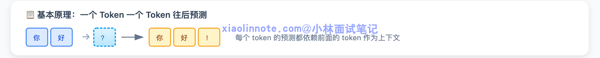
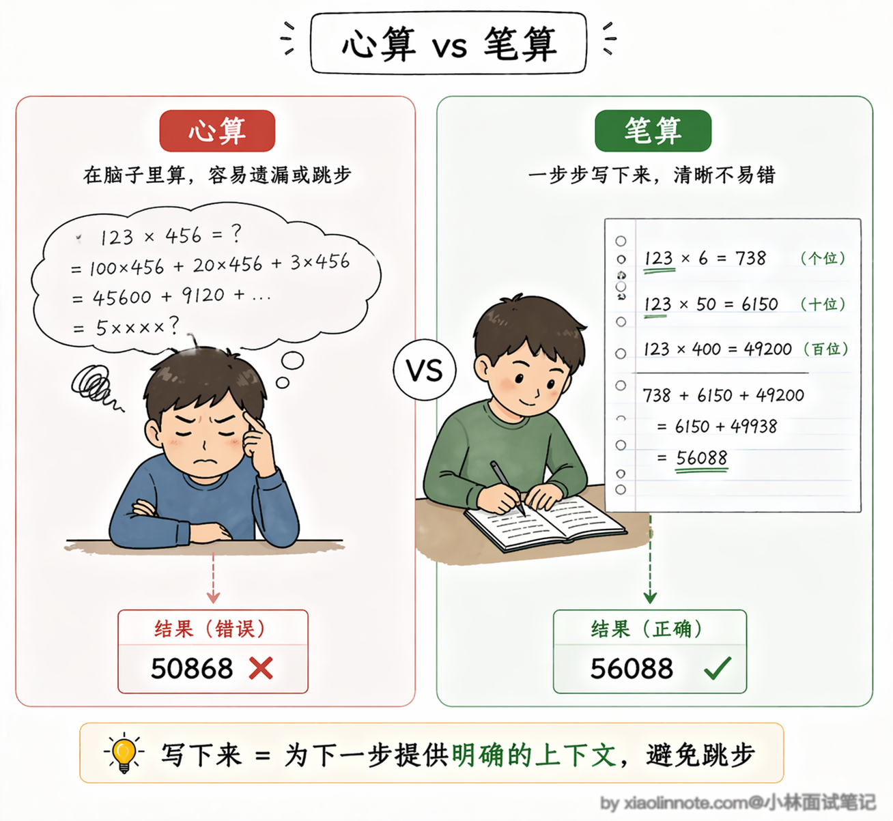
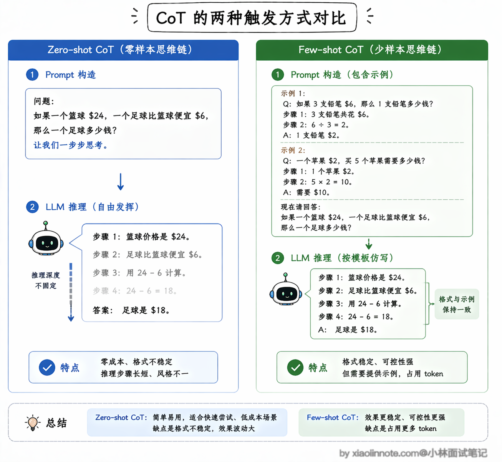
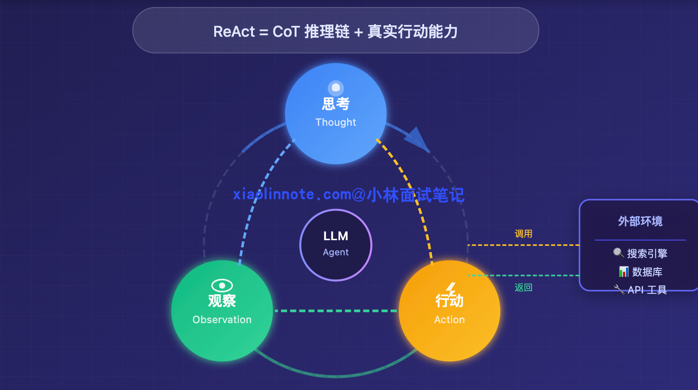
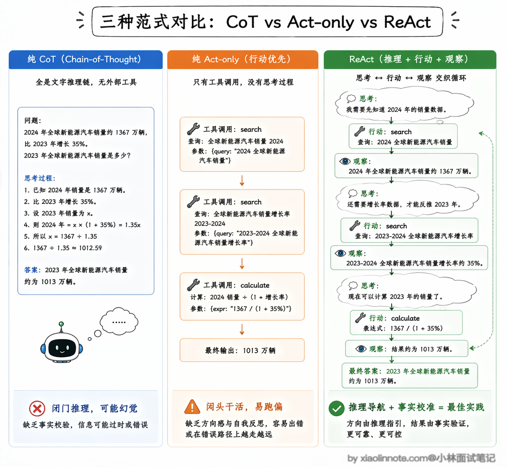
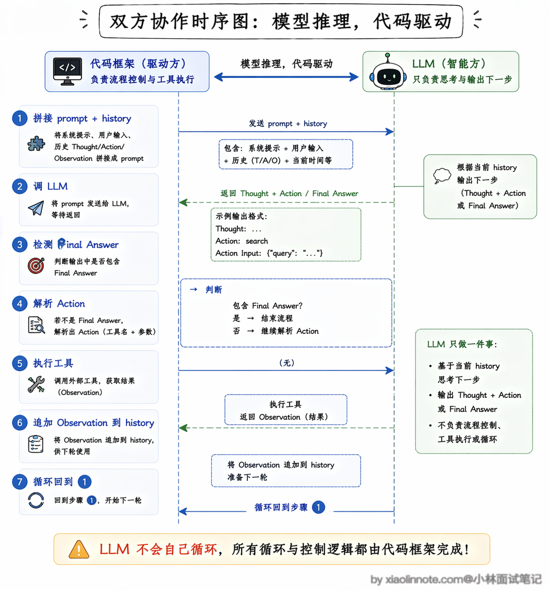
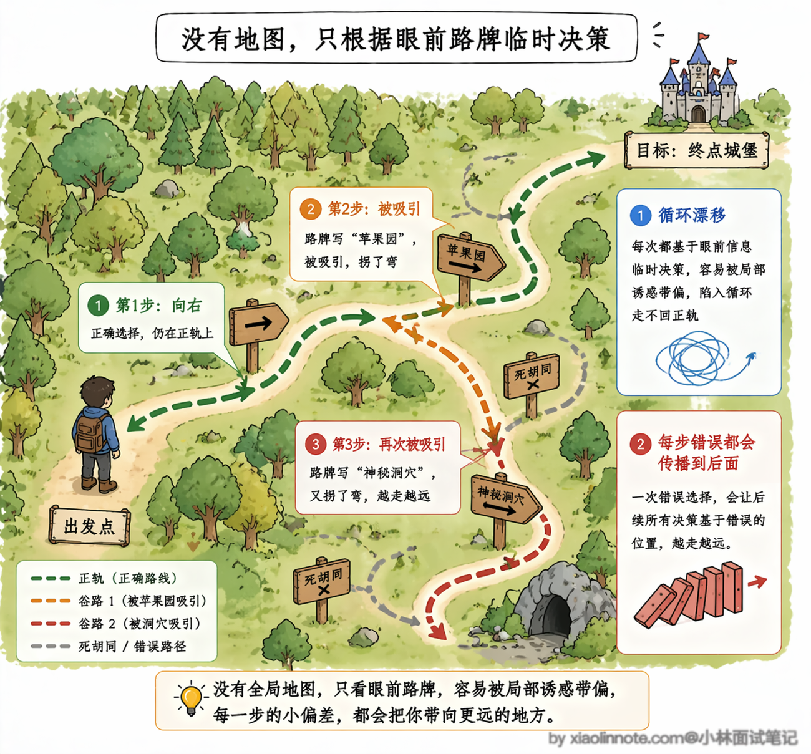
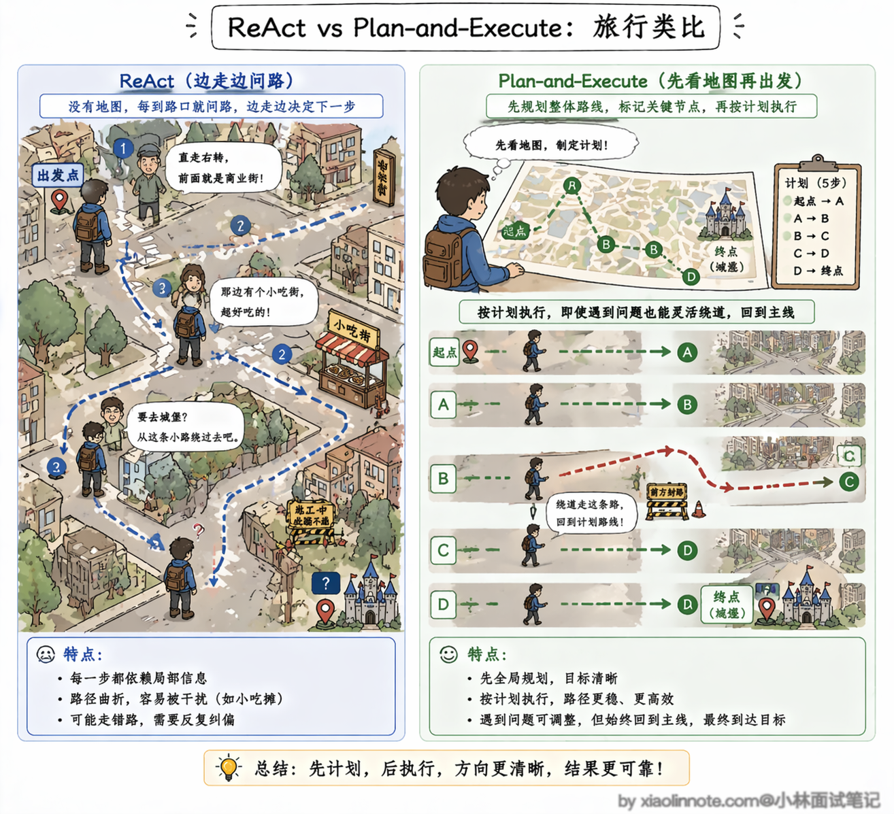
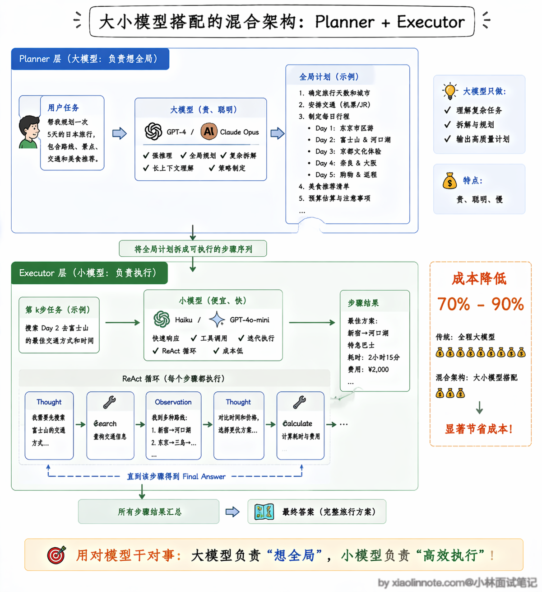

5. Agent 推理模式有哪些？ReAct 是啥？具体是怎么实现的？
👔面试官：你做过 Agent 项目，那你说说 ReAct 是什么，跟普通的 LLM 调用有什么区别？
🙋♂️我：ReAct 就是让模型一边思考一边行动，调工具拿结果，然后继续思考……就是一个循环。
👔面试官：好，那你说说这个循环是谁在驱动？是模型自己在转，还是有别的机制？
🙋♂️我：应该是……模型自己在循环？它判断完成了就停下来？
👔面试官：不对，模型每次只输出一段文本，它不会自己「循环」。那这个循环到底是怎么跑起来的？
🙋♂️我：那可能是框架帮它跑的？解析输出，执行工具，再把结果传回去？
👔面试官：对了，这才是关键。模型每次只做一件事：根据历史输出下一步的 Thought 和 Action。你的代码负责检测输出、执行工具、把 Observation 填回历史，再次调用模型，这才叫 ReAct 的真正实现方式。
理解了「模型负责推理、代码负责驱动」这个分工，ReAct 就不再神秘了。
💡 简要回答
Agent 的推理模式我用过几种。
最基础的是直接输出答案，没有中间推理；CoT 是让 LLM 先把推理过程写出来再给答案，准确率更高；ReAct 是在 CoT 基础上加了「行动」，让 LLM 交替输出思考和工具调用，每次行动后再根据结果继续思考，形成一个循环。
我觉得 ReAct 是目前 Agent 用得最广的模式，因为它推理过程可见，又能动态利用外部工具，两个优点都有。
📝 详细解析
什么是推理模式？
要理解「推理模式」这个词，得先说清楚 LLM 面临的一个根本困境。
LLM 的工作原理，是根据你给它的输入，一个 token 一个 token 地往后预测。

你问它一个简单问题，它可以直接说出答案。但如果你问的是一个需要多步推导的问题，比如「A 公司的市值是 B 公司的 1.2 倍，B 公司比 C 公司高 30%，请问 A 和 C 谁更高，差多少？」，LLM 在没有任何辅助的情况下，往往直接给你一个「感觉对」的答案，而这个答案可能是错的。
原因在于，当它「一口气」预测答案时，中间的推导步骤都是隐式的，没有办法强制自己在每一步都做出正确的推断。误差会在中间某个暗处悄悄累积，最终暴露在答案里。
你可以把它类比成心算和笔算的区别。让你心算「123 × 456」，你可能算错；但如果你把每一步都写在纸上，「123 × 6 = 738、123 × 50 = 6150……」，一步一步来，算错的概率就会大大降低。

原因不是你突然变聪明了，而是「写下来的过程」本身帮助你避免在中间某步跳跃出错。LLM 也一样，把推导过程写出来，就等于在每一步都有了一个可以依赖的「前文」，下一步的预测建立在一个已经写清楚的正确基础之上。
「推理模式」存在的根本原因就是这个：通过不同的方式，让 LLM 把隐式的思考过程显式化出来，从而减少多步推理中的累积误差。CoT、ReAct 就是这个方向上的两种解法，每一个都在解决前一个的局限性。
CoT是什么？
CoT，全称 Chain of Thought（思维链），由 Wei 等人在 2022 年提出，是最早也最简单的解法。
核心想法极其朴素：在 prompt 里加一句「让我们一步步思考」，LLM 就会先把推理步骤写出来，再给答案，而不是直接蹦出结论。为什么加一句话就有效？
本质是因为 LLM 的输出是顺序生成的，先写出来的推理内容会进入上下文，成为后续生成的依据。
当 LLM 先写出「第一步：A 市值是 B 的 1.2 倍，所以 A > B」这句话之后，这个推导结论就进入了上下文，下一步的预测建立在这个明确写出的正确基础上，而不是靠它在脑子里「暗中维持」这个中间状态。就像笔算，纸上的每一行数字都在帮你记住上一步算到哪了。
CoT 有两种触发方式，理解了区别才能在实际项目中选对。
第一种叫 Zero-shot CoT，做法非常简单，直接在 prompt 末尾加上「让我们一步步思考」这句话就行了，LLM 会自己展开推理过程，不需要你提供任何示例。这种方式的优势是零成本、即插即用，缺点是 LLM 的推理格式和深度完全靠它自己发挥，不太稳定，有时候会写得很详细，有时候又跳步。
第二种叫 Few-shot CoT，你需要在 prompt 里给几个带有完整推理过程的例子，让 LLM 照着这个格式来模仿。比如你先写一道数学题，把每一步怎么算、最后得出什么结论都写清楚，LLM 看到这个模板之后就会按照同样的格式展开推理。Few-shot 的效果更稳定，特别适合输出格式要求比较固定的场景，代价是需要你提前准备高质量的示例，而且示例本身也会占用 token。

但 CoT 有一个根本性的局限：它是纯文字推理，没有办法和外部世界交互。
推理过程再完整，也拿不到实时数据，不能执行计算，不能访问数据库。
如果你问 LLM「现在苹果公司的市值是多少？」，它只能根据训练数据里的知识回答，而那些知识可能已经过时好几个月了。严格说，CoT 框架里不是不能调工具（你可以用 Prompt 让它生成一个「建议调用 API」的文本），但 CoT 的设计本身没有把推理和工具调用交织在一起，接工具需要你自己在外面额外胶水。
你需要的不只是一个能把推理写出来的 LLM，而是一个能在推理过程中「出去拿数据」「执行工具」再「回来继续推理」、并且这件事是原生设计的系统。于是有了 ReAct。
ReAct 是什么？
ReAct 是 Reasoning and Acting 的缩写，由 Yao 等人在 2022 年提出，核心思路是在 CoT 的推理链里，插入真实的「行动」。
它让 LLM 按照「思考 -> 行动 -> 观察」这个循环来推进任务：先思考当前该怎么做，然后调用一个工具去获取信息或执行操作，把工具返回的结果作为新的「观察」接收回来，再进入下一轮思考，直到 LLM 判断任务完成。

那为什么不直接用纯 CoT 或者纯 Act-only（只行动不推理）呢？这个对比非常关键。
纯 CoT 的问题前面说过了，它只能在脑子里推理，推得再好也拿不到真实数据，遇到需要实时信息的场景就抓瞎，而且纯靠内部推理很容易产生幻觉，因为没有外部事实来校准。
纯 Act-only 走的是另一个极端，它让 LLM 直接输出工具调用序列，不写任何思考过程，看起来效率很高，但问题在于每一步行动之间没有推理链条来连接，就像一个人闷头干活但不动脑子，遇到需要调整策略的情况就容易出错。
在 HotpotQA 这类多跳问答基准测试上，Act-only 的准确率明显低于 CoT 和 ReAct，原因就是缺少推理环节导致动作序列很脆弱，一旦某一步搜到了不相关的内容，后面的动作也跟着跑偏，因为没有「思考」环节来纠正方向。
ReAct 的精妙之处就在于把推理和行动交织在一起：Thought 帮助 LLM 分析当前局势、决定下一步该做什么，Action 让它把决策落地为真实操作，Observation 把外部世界的反馈带回来，三者互补形成闭环。推理为行动提供方向，行动为推理提供事实，这才是 ReAct 比前两种方案都好用的根本原因。

用一个具体例子来感受这个循环。
假设你问 Agent「2024 年苹果公司和谷歌的市值谁更高？差多少？」，如果只靠 CoT，LLM 只能说出它训练时知道的数字，可能已经不准了。但用 ReAct，整个过程会是这样的：
Thought: 这道题需要两家公司的实时市值数据，我得先查苹果的市值
Action: search
Action Input: 苹果公司 2024 年市值
Observation: 苹果公司 2024 年市值约为 3.5 万亿美元
Thought: 好，苹果的数字有了，再查谷歌的
Action: search
Action Input: 谷歌 2024 年市值
Observation: 谷歌 2024 年市值约为 2.1 万亿美元
Thought: 两个数字都有了，苹果 3.5 万亿，谷歌 2.1 万亿，苹果更高，差距是 1.4 万亿
Final Answer: 苹果公司 2024 年市值约 3.5 万亿美元，谷歌约 2.1 万亿美元，苹果更高，差距约 1.4 万亿美元每一个 Thought 是 LLM 的推理，每一个 Action 是它决定调什么工具，每一个 Observation 是工具执行后系统填进去的真实结果，最后 Final Answer 是任务完成的终止信号。推理和真实数据的获取是交织在一起的，这才让 Agent 能处理「需要实时信息」或「需要执行操作」的任务。
ReAct 的实现原理，是通过 prompt 格式来约束 LLM 的输出结构，但这个循环不是 LLM 自己在转，而是由你的代码来驱动的。
LLM 每次只做一件事：根据当前的历史，输出下一步的 Thought 加上 Action。你的代码负责检测它的输出，判断「有没有 Final Answer」，如果没有就解析出 Action、执行对应的工具、把工具结果作为 Observation 填回历史，再次调用 LLM，一轮一轮地转。一个典型的 ReAct prompt 长这样：
你是一个 AI 助手，可以使用以下工具：
- search(query): 搜索互联网获取最新信息
- calculator(expr): 计算数学表达式
回答时请严格按照以下格式：
Thought: 你的思考过程（分析当前情况，决定下一步）
Action: 工具名称
Action Input: 工具的输入参数
Observation: （此行由系统填入工具返回的结果，你不用写）
... 以上可以重复多轮 ...
Final Answer: 当你确定可以回答时，在这里给出最终答案
问题：2024 年苹果公司的市值是多少？和谷歌相比谁更高？然后你的代码跑一个循环，不断地「调 LLM、检查输出、执行工具、把结果填回去」：
def react_agent(question: str, tools: dict, max_steps: int = 10):
# 把 ReAct 格式约束和问题拼在一起，作为初始 prompt
prompt = build_react_prompt(question, tools)
# 用来存每一轮的对话历史，每次调 LLM 都把完整历史带上
history = []
for _ in range(max_steps):
# 调 LLM，让它输出下一步的 Thought + Action
# 注意：每次调用都把完整历史拼进去，LLM 才知道之前做了什么
response = llm.generate(prompt + "\n".join(history))
if "Final Answer:" in response:
# LLM 输出了 Final Answer，说明它判断任务完成了
return response.split("Final Answer:")[-1].strip()
# 从 LLM 输出里解析出 Action 名称和 Action Input
# 例如：Action: search，Action Input: 苹果公司市值 -> ("search", "苹果公司市值")
action, action_input = parse_action(response)
# 执行对应的工具，拿到真实结果
if action in tools:
observation = tools[action](action_input)
else:
# 如果 LLM 填了一个不存在的工具名，给它一个错误反馈
observation = f"工具 {action} 不存在，请选择可用工具"
# 把这一轮的 LLM 输出（含 Thought+Action）和 Observation 都追加进历史
# 下次调 LLM 时这些内容会成为它的「记忆」
history.append(response)
history.append(f"Observation: {observation}")
return "超过最大步数，任务未完成"整个 loop 里，真正的「智能」全在 LLM 每次输出的 Thought 里，它在分析当前情况、做出下一步决策。你的代码框架做的事是：管理对话历史、执行工具、检测循环终止条件。两件事分工很清楚，理解了这个分工，ReAct 就不再神秘了。

需要补充一点：上面描述的是 ReAct 的经典实现，靠 prompt 格式约束加文本解析来驱动工具调用。
现代 LLM（GPT-4、Claude 3 之后）基本都原生支持 Function Calling / Tool Use，模型可以直接输出结构化的 JSON 工具调用，不再需要靠解析 Action: xxx 这种文本格式。
这让 ReAct 的实现更干净，也更可靠，不容易因为 LLM 输出格式不规范而解析失败。本质上「思考 -> 行动 -> 观察」的循环没变，只是「行动」这一步从解析文本变成了解析结构化 JSON。
不过 ReAct 并不是完美的，它有两个在实际项目中很容易遇到的坑，面试时能主动说出来会非常加分。
第一个坑叫「循环漂移」。你可以把 ReAct 想象成一个没有导航的旅行者，每到一个路口都根据眼前看到的路牌临时决定往哪走。如果路牌上的信息足够清晰，他能顺利到达目的地。
但问题是，路上的「风景」也会吸引他的注意力，走着走着就拐进了一条岔路，忘了自己最初要去哪。ReAct 就是这样，因为每一步都是根据当前历史重新决策的，没有一个全局计划在约束它，跑着跑着就可能偏离最初的目标。
举个实际的例子，你让它「查苹果公司最近三年的营收变化趋势」，它第一步搜了 2024 年的数据，第二步看到搜索结果里提到了苹果和三星的竞争关系，它觉得这个也挺有意思，于是第三步就跑去搜三星的数据了，越走越远，把原来的目标忘了。
步骤越多，历史上下文越长，这种漂移的概率就越大，因为冗长的历史信息里充满了「诱惑」，随时可能把模型的注意力从原始目标上拉走。
第二个坑叫「错误传播」。ReAct 的每一步决策都建立在前面所有步骤的结果之上，如果中间某一步拿到了错误的信息，或者工具返回了一个有误的结果，后面所有的推理都会被这个错误带跑。
更麻烦的是，ReAct 没有内置的「回头检查」机制，它不会停下来反问自己「前面那步的结果靠谱吗」，而是默认前面的 Observation 都是对的，一路往前冲。一旦错误出现在早期步骤，整条推理链后面全部白费。
这两个问题的根源其实是同一个：ReAct 是纯粹的「前向推理」，每一步都是走一步看一步，没有全局规划来约束方向，也没有反思机制来纠正错误。

那怎么解决呢？既然问题出在「没有全局规划」，那最直接的思路就是：先让 LLM 站在全局视角把整个任务想清楚，列出一份完整的执行计划，然后再一步一步去执行。这就是 Plan-and-Execute 模式的核心思路。
Plan-and-Execute：先规划再执行
你可以把 ReAct 和 Plan-and-Execute 的区别，类比成「边走边问路」和「先看地图再出发」的区别。
ReAct 就像你到了一个陌生城市，没有地图，每到一个路口就问一次路人该往哪走。路人给的方向大致没错，但走着走着你可能被街边的小吃摊吸引，拐进了一条巷子，忘了自己要去哪。Plan-and-Execute 则是你出发之前先打开地图，把从起点到终点的路线全部规划好，标出途中要经过哪几个关键节点，然后按照这个路线一站一站地走。即使中途某条路封了，你也知道大方向在哪，可以绕路但不会迷路。

具体来说，Plan-and-Execute 把整个任务处理流程拆成了两个明确的阶段。
第一个阶段是「规划」（Planner）。把用户的任务目标交给 LLM，让它先不急着动手，而是站在全局的角度想清楚：这个任务要分几步完成？每一步具体做什么？步骤之间的依赖关系是什么？然后输出一份结构化的执行计划。这一步的关键是 LLM 只做规划、不执行任何工具调用，全部注意力都集中在「想清楚」这件事上。
第二个阶段是「执行」（Executor）。拿着规划好的计划，按顺序一步一步地执行。每一步的执行本身可以用 ReAct 模式来跑，也就是说执行器在处理单个子任务时，仍然可以「思考 -> 行动 -> 观察」地循环。但不同的是，执行器始终知道自己在整体计划中处于哪一步、下一步要做什么，不会像纯 ReAct 那样漫无目的地漂移。
用代码来看会更清楚：
def plan_and_execute(question: str, tools: dict):
# 第一阶段：让 LLM 生成一份完整的执行计划
# 注意这里只做规划，不执行任何工具
plan = llm.generate(f"""
请为以下任务制定一个分步执行计划：
任务：{question}
请输出一个编号列表，每一步都要具体、可执行。
""")
# 解析出计划中的每一步
steps = parse_plan(plan)
results = []
# 第二阶段：按计划逐步执行
for i, step in enumerate(steps):
# 每一步可以用 ReAct 模式来执行
# 但执行器知道自己在整体计划中的位置
step_result = react_executor(
task=step,
tools=tools,
context=f"整体计划共{len(steps)}步，当前是第{i+1}步",
previous_results=results # 把前面步骤的结果传进去
)
results.append(step_result)
# 关键：执行完一步后，检查是否需要调整后续计划
# 这就是「动态重规划」机制
if need_replan(step, step_result, steps[i+1:]):
remaining_steps = llm.generate(f"""
原计划：{steps}
已完成到第{i+1}步，结果：{results}
剩余步骤是否需要调整？请输出更新后的剩余步骤。
""")
steps = steps[:i+1] + parse_plan(remaining_steps)
# 最后汇总所有步骤的结果，生成最终答案
return llm.generate(f"根据以下执行结果回答问题：{results}")这段代码里有一个非常关键的设计，就是「动态重规划」。计划不是定死的，而是活的。每执行完一步，系统都会检查一下：这一步的实际结果和预期是否一致？
如果某一步的结果出乎意料，比如你原计划第二步要查某个 API 但发现这个 API 已经下线了，系统会把已有的结果和剩余的步骤重新交给 Planner，让它根据新情况调整后续计划。这就像你开车导航时，前方突然封路了，导航会自动重新规划一条新路线，而不是傻傻地让你掉头回起点。
那 Plan-and-Execute 和 ReAct 分别适合什么场景呢？
ReAct 的优势在于灵活，每一步都能根据最新情况做决策，特别适合那些任务边界不太明确、需要探索性地获取信息的场景，比如开放式的问答、信息搜索这类任务。它的代价是容易漂移，而且每一步都要把完整历史带上调 LLM，步骤多了 token 消耗会线性增长。
Plan-and-Execute 的优势在于有全局视野，不容易跑偏，特别适合那些目标明确、需要多步骤协作完成的复杂任务，比如深度研究、长文写作、多工具协同的数据分析。它的代价是初始规划本身就需要一次 LLM 调用，如果任务很简单（一两步就能搞定），这个规划步骤反而是多余的开销。
实际工程中，两者经常被混合使用。一个常见的做法是：用 Plan-and-Execute 做全局规划，用 ReAct 做每一步的执行。
规划阶段用能力更强的大模型（比如 GPT-4、Claude Opus）来保证计划质量，执行阶段用便宜的小模型来跑具体的工具调用，这样既保证了全局方向不跑偏，又控制了成本。这种大小模型搭配的架构，在实际项目中能降低 70% 到 90% 的 LLM 调用成本，是非常实用的工程技巧。

🎯 面试总结
回答 ReAct 相关问题，最容易踩的坑就是开头说的那个误区：以为模型自己在「循环」。
面试官最想听到的核心点是两个：第一，ReAct 的本质是「思考 -> 行动 -> 观察」的循环，推理过程显式化，又能动态调用外部工具，解决了 CoT 只能纯文字推理的局限；第二，这个循环是由你的代码框架驱动的，模型每次只输出 Thought + Action，你的代码负责解析、执行工具、把 Observation 填回历史，再把完整历史传给模型进入下一轮。
把这两点说清楚之后，主动提一下 ReAct 的两个实战局限（循环漂移和错误传播），再顺带说一下 Plan-and-Execute 是怎么通过「先规划再执行」来解决 ReAct 的漂移问题的，以及实际项目中两者经常混合使用（规划用大模型、执行用小模型），整个回答就会很有深度。
对了，AI Agent的面试题会在「公众号@小林面试笔记题」持续更新，林友们赶紧关注起来，别错过最新干货哦！